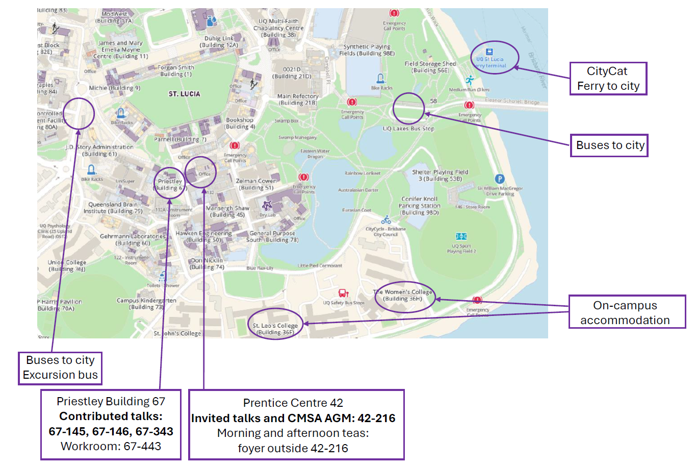

Local Information
Getting there
The University of Queensland St Lucia campus is located about 6km from the city centre. If you are arriving in Brisbane via air then there are a number of transport options available for travel between the Airport and the University.
- Taxi: a Taxi from the airport to UQ St Lucia Campus will cost approximately $75.
- Airtrain: the Airtrain has stations at both the International and Domestic terminals, and provides services to Brisbane City. From there you will need to catch a connecting bus to the University. Airtrain fares are $10.95. See here for more information about the Airtrain option.
Public transport to UQ St Lucia Campus
Bus: UQ St Lucia campus has two bus stops: Chancellor's Place and UQ Lakes. Both have regular bus routes to the city.
Ferry: UQ St Lucia campus has a CityCat ferry terminal located near the UQ Lakes bus station and Eleanor Schonell Bridge. It is the last stop on the CityCat service.
Fares: Bus and CityCat fares are a flat 50 cent rate. Note that the network is cashless, so you will need to purchase a go card, paper ticket, or a visitor's go explore card. Further information on Brisbane's public transport system and payment options can be found here and general transit information, including journey planning can be found here.
At UQ
Please see the map below for the locations of conference activities, accommodation, etc. on campus at UQ.

Local coffee / food / amenities
Coffee on campus
- Merlo Coffee
- Lakeside Cafe
- Patina Alumni Court
- Wordsmiths Cafe
- Cafe Nano
- Darwin's
There are a number of other cafes, bakeries and outlets that sell coffee on campus. Bubble tea can be found at Chatime or at the Boba vending machine.
Food on campus
- Phizz food court (building 63) - Outlets include Guzman y Gomez, Subway, Oriental Corner, Marketcart, Boost Juice, Kenko Sushi
- Main refectory (Union building 21) - Options include Kenko Sushi, Main Course, On a Roll Bakery, Boost Juice, Redroom
- Biological Sciences Library (building 94) - Darwin's, Pizza Caffe, Bagel Boys
- Wordsmiths Cafe
- Lakeside Cafe
- Belltop Cafe
- Saint Lucy Caffe e Cucina
- Ezy Mart (sandwiches, pies, snacks)
Food near campus
Hawken Village (~10 minute walk).
- A Salt & Battery (fish & chips) $$
- Misushi (Japanese) $
- KingWu's (noodles) $
- Ciao Bello (Italian) $$
- Kurry Kingdom (Indian) $
- Thai at Home (Thai) $$
- Saigon Yummy (Vietnamese) $
- Kai Kai Chicken (Korean) $$
- Beijing BBQ House (Chinese) $$
- Shalom St Lucia (Indonesian) $
- IGA (pies, hot food, groceries)
Toowong Village shopping centre also has many options (~15 minutes by bus).
Other
Internet Access
Eduroam is available on campus for university students or staff. There is also free public wifi for UQ conference attendees, see UQ Guest wifi.
Emergency
In an emergency, contact UQ Security on (07) 3365 3333.
To report a maintenance emergency, contact PF Assist on (07) 3365 1234.
Medical Clinic
St Lucia Medical at 32 Hawken Drive, is open to the public. Please note that the on-campus clinic (the UQ St Lucia Medical Centre) is open to UQ staff, students, and their dependents only.